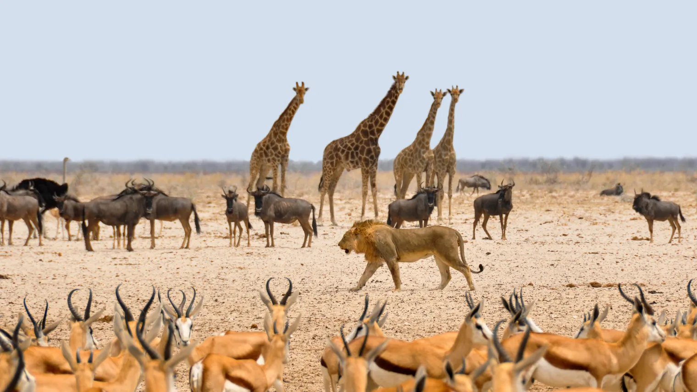
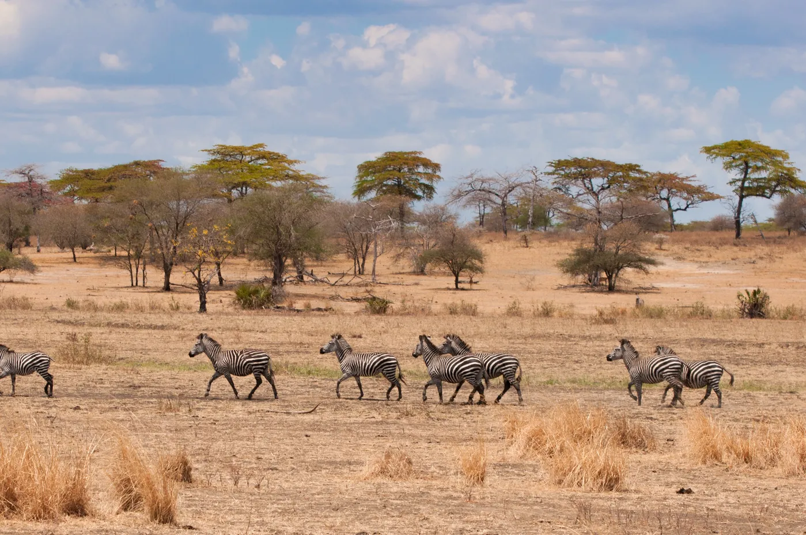
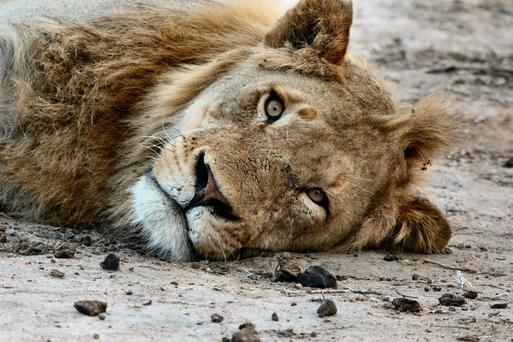
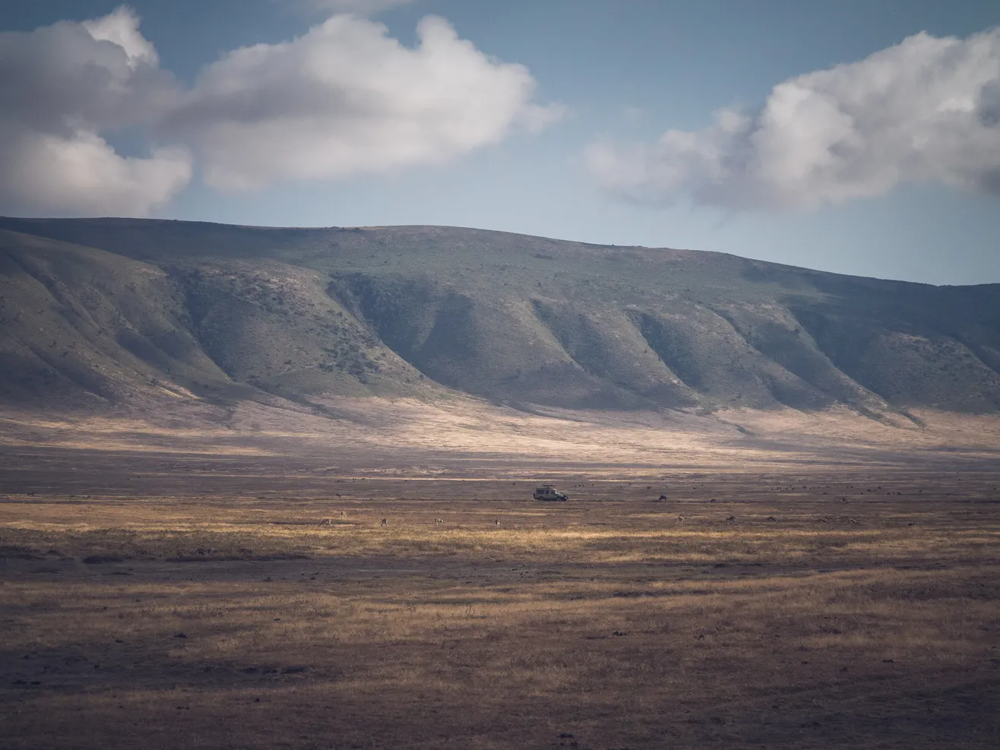

Tanzania Safari Tour - $4000
Tanzania and Zanzibar are some of the most picturesque places in Africa that a man’s hand didn’t rush ... Life is boiling here, zebras, leopards are running, buffalos are chewing grass, baby elephants are born, lions hunt. This is a world on the other side of the hemisphere, wild and beautiful, which will make you feel like a pioneer and see exotic animals in their natural habitat. At the end of the program, you can relax on the white beaches of Zanzibar. We travel through the whole territory of Tanzania, from Serengeti to Kilimanjaro.
Itinerary
Day 1: Moshi – Lake Manyara National Park
We start our safari trip with a drive to the Lake Manyara National Park. Founded in 1960, the small Lake Manyara National Park is home to tree-climbing lions, elephants and large troops of baboons and monkeys. The park is dominated by the shallow, alkaline lake and boasts with diverse habitats like grassy plains, escarpment, and forest. Here hundreds of bird species gather including the legendary pink flamingos. In addition to the stunning scenery, you have the chance to meet giraffes, buffaloes, hippos, wildebeests and the comical warthog. The safari jeep has an open roof and is the great viewing platform to appreciate the nature and animals of this park. In the late afternoon, you will leave the park and drive to the selected lodge, where you will spend the night.
Day 2: Lake Manyara Area – Serengeti National Park
After a deep sleep we will go towards the fertile crater highlands where the local people grow wheat, corn and coffee. By midday we will reach the plains of the Serengeti National Park, the most stunning park in Tanzania. The Serengeti has a diversity of landscapes including short grass plains, savannah, thick bush, swamps and lakes and it is famous for the yearly migration when hundred thousands of wildebeest and zebras trek to find fresh grass and water. On our way to the hotel we will show you, where the word Serengeti (plains in the language of the Maasai) comes from. We reach the hotel in the early evening so that you have enough time to have a dinner and rest.
Day 3: Serengeti National Park
This day we spend on a game drive in the Serengeti National Park. During the rainy season in November and December the herds move from the hills in the north to the plains in the south, so we chase them on their route. A visit to the Serengeti Visitor Centre is also possible. Here you can learn more about the history of the park and the research that is being done by the Frankfurter Zoological Society. After a day full of emotions we come back to the hotel near the national park, and have a rest.
Day 4: Serengeti National Park – Ngorongoro Conservation Area
We continue exploring the Serengeti National Park. In the Seronera Valley we might be lucky to see predators hunt as animals gather at the waters. After lunch we rush in the direction of the Ngorongoro Crater. As soon as we have reached the crater you will have a superb view of the caldera. This 20 km wide crater is part of an UNESCO World Heritage Site and is hosts over 20,000 animals. This evening, we stay in a local hotel right on the crater from which you'll have the opportunity to witness one of the most incredible sunsets in your life!
Day 5: Ngorongoro Crater – Arusha/Moshi
Rise and shine! At the start of our last safari day we drive down the steep path into the crater just. The Ngorongoro Crater is the largest, unbroken and unflooded caldera in the world and it has an incredible diversity of wildlife. In addition to zebras and wildebeests, we might also spot the rare black rhino and other members of the “Big Five” – lion, elephant, buffalo, rhino and leopard. The crater also hosts other animals such as hyenas, waterbucks, bushbucks, eland and more than 500 bird species. After an extensive drive and a picnic lunch we will leave the caldera in and drive back to Arusha. Those who want to continue their journey on the white sands of Zanzibar are transferred there, others spent the night in Arusha.